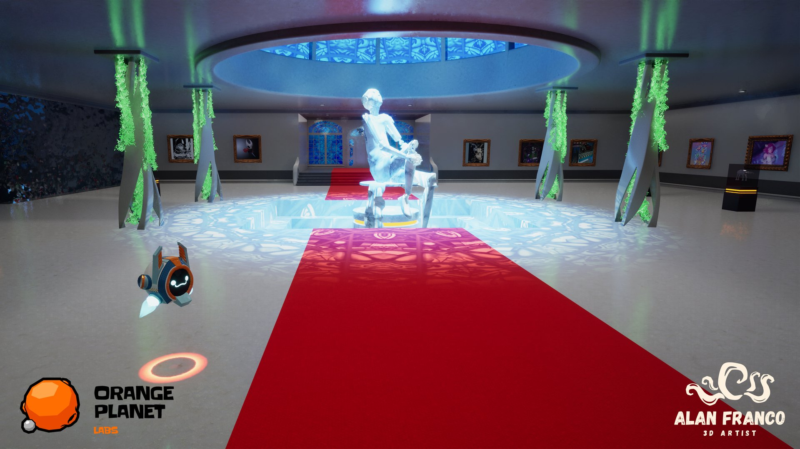
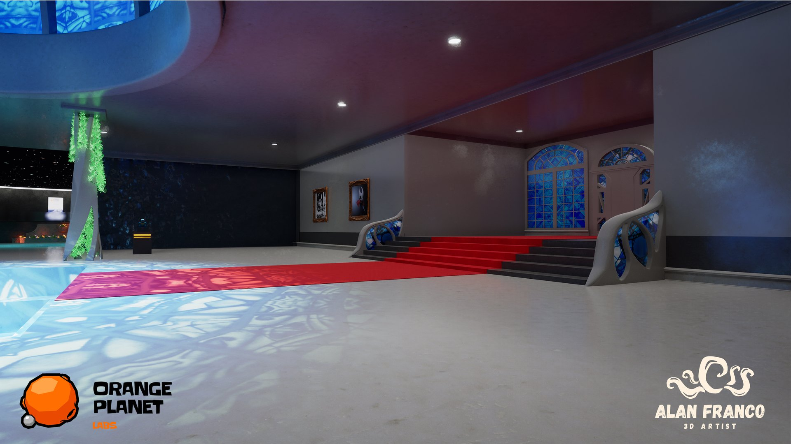
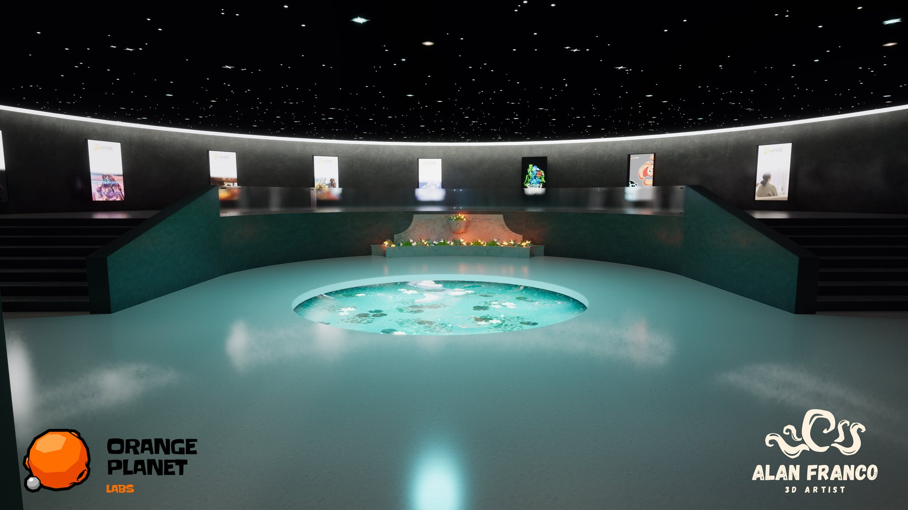
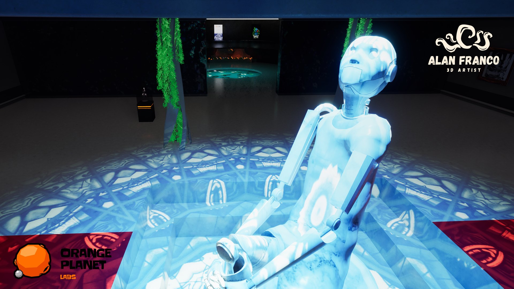
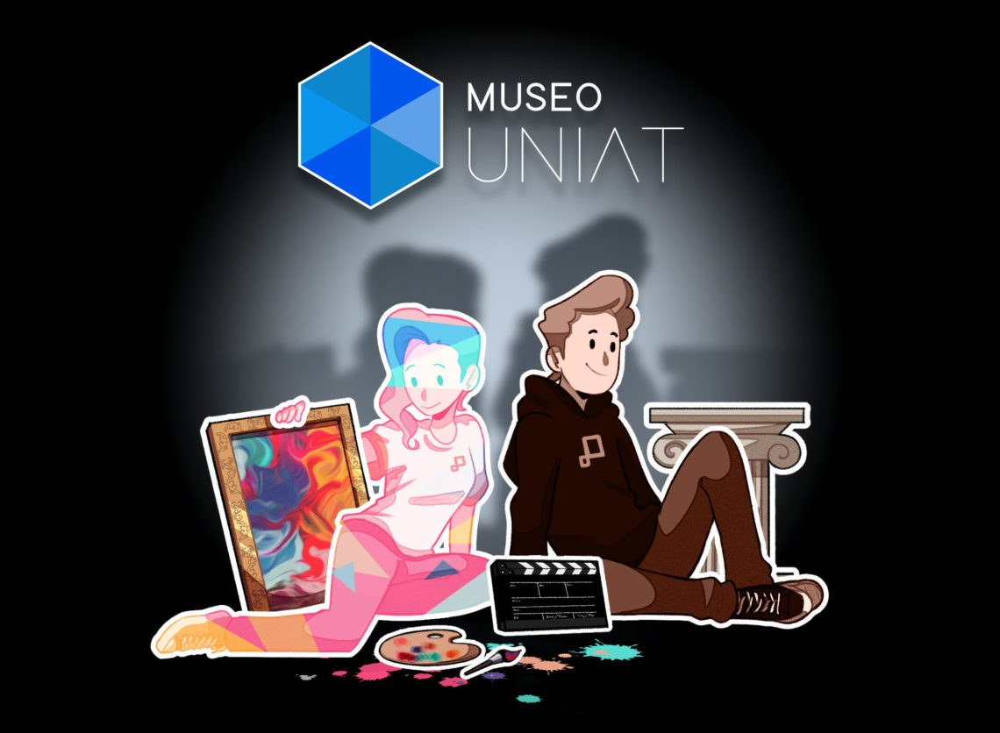

UNIAT Museum
A virtual museum in Unreal Engine for student and alumni work, built end to end.
- Studio
- UNIAT
- Role
- 3D modeling, texturing, lighting and integration
- Tools
- Blender, Substance Painter, Unreal Engine
- Year
- 2023

Overview
A virtual gallery space in Unreal Engine that showcases work by UNIAT students and alumni. I built it end to end: all of the 3D models and textures, the lighting and the engine integration.
I modeled everything in Blender and textured it in Substance Painter, then assembled and lit the space in Unreal Engine. The museum has a main hall under a stained-glass skylight, with a central statue and framed artworks along the walls, and a rotunda with a starry ceiling and a pond in the middle.
Light is a big part of the space: the stained glass projects colored patterns onto the floor and the red carpet.
What I did
- Modeled the architecture and props in Blender: entrance stairs, main hall, rotunda, columns, statue and pedestals.
- Textured the models in Substance Painter.
- Assembled the museum in Unreal Engine and integrated the exhibited pieces: framed artworks, wall posters and pedestal displays.
- Lit the space, using the stained-glass windows and skylight as a source of colored light.
Gallery



